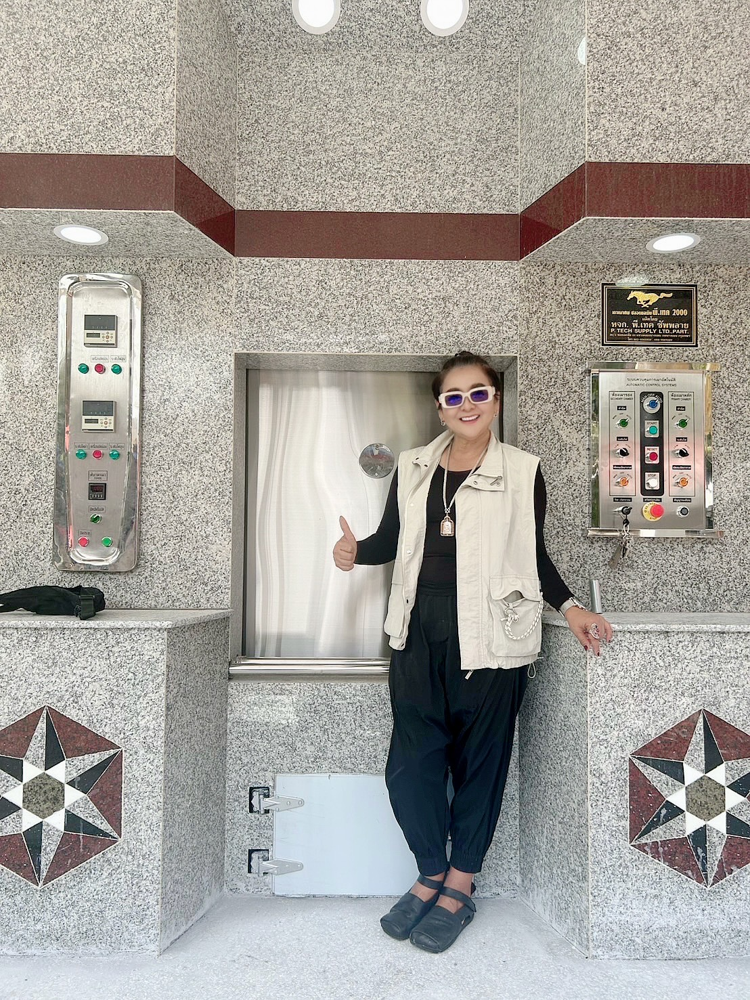
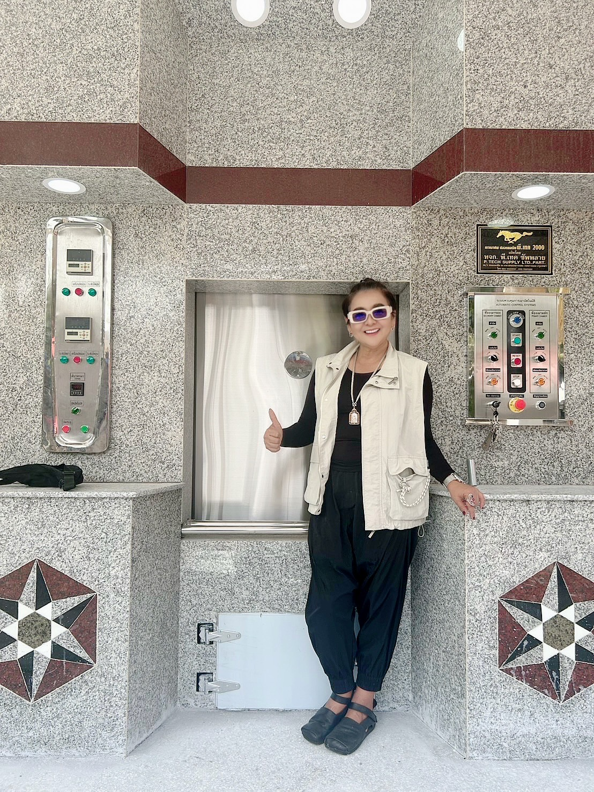

การประกันและการรับประกัน
ห้างหุ้นส่วนจำกัด พี.เทค ซัพพลาย โครงสร้างของเตาเผาปลอดมลพิษ ถูกออกแบบโดยวิศวกร ที่มีประสบการณ์ด้านเตาเผาอุตสาหกรรม ฝีมือการก่อสร้างปราณีตจากทีมช่างผู้ชำนาญผ่านการฝึกอบรมจากผู้ผลิตวัสดุทนไฟโดยเฉพาะ โดยระหว่างการติดตั้งเตาเผาศพปลอดมลพิษ มีบริการเตาเผาสำรองเพื่อให้ใช้งานได้ตลอดระยะเวลาการติดตั้ง ซึ่งสามารถติดตั้งเสร็จสมบูรณ์ภายใน 45 วัน พร้อมบริการรื้อเตาเผาเดิมให้ฟรี และมีการอบรมการใช้งานและการดูแลรักษาให้กับเจ้าหน้าที่เมรุ จนสามารถปฏิบัติงานได้ พร้อมคู่มือการใช้งาน รับประกันคุณภาพตัวเตาและวัสดุทนไฟเป็นเวลา 10 ปี รับประกันหัวพ่นไฟ และอุปกรณ์ไฟฟ้า เป็นเวลา 2 ปี ทำให้ผลงานของห้างหุ้นส่วนจำกัด พี.เทค ซัพพลาย ได้รับความไว้วางใจจากหลายพื้นที่และเป็นที่ยอมรับในระดับกว้างขวาง ทั้งในด้านคุณภาพ ความรับผิดชอบ และความตรงต่อเวลา


ความรับผิดชอบต่อผลงาน
เมื่อการติดตั้ง เตาเผาศพปลอดมลพิษ เสร็จสิ้นเรียบร้อยแล้ว ทางบริษัทจะดำเนินการตรวจสอบและทดสอบระบบการทำงานทั้งหมดอย่างละเอียด เพื่อให้มั่นใจว่าอุปกรณ์และระบบต่าง ๆ ทำงานได้อย่างมีประสิทธิภาพ นอกจากนี้ยังมีขั้นตอนการ บ่มเตา เพื่อปรับสภาพการใช้งานให้สมบูรณ์และยืดอายุการใช้งานของเตาได้ยาวนานขึ้น หลังจากนั้น บริษัทจะดำเนินการ ทดสอบคุณภาพโดยการเผาศพจริง ภายใต้การควบคุมของทีมงานผู้เชี่ยวชาญ เพื่อให้ลูกค้าสามารถตรวจสอบผลลัพธ์การทำงานของเตาเผาได้จริง และเกิดความมั่นใจถึงมาตรฐานความปลอดภัย ความสะอาด และประสิทธิภาพ ก่อนที่จะส่งมอบงานอย่างเป็นทางการ
 

บริการเสริม
ห้างหุ้นส่วนจำกัด พี.เทค ซัพพลาย ให้ความสำคัญกับมาตรฐานด้านสิ่งแวดล้อมและความปลอดภัยในการใช้งาน จึงได้จัดให้มีบริการ ตรวจวัดค่ามลพิษ ของเตาเผาศพปลอดมลพิษ โดยความร่วมมือกับ บริษัทผู้เชี่ยวชาญที่ได้รับการขึ้นทะเบียนจากกรมโรงงานอุตสาหกรรมอย่างถูกต้องตามกฎหมาย การตรวจวัดดังกล่าวครอบคลุมค่ามาตรฐานที่เกี่ยวข้องกับก๊าซและฝุ่นละอองที่ปล่อยออกสู่บรรยากาศ เพื่อยืนยันว่าอุปกรณ์ที่ติดตั้งสามารถทำงานได้อย่างมีประสิทธิภาพและเป็นมิตรต่อสิ่งแวดล้อม ลูกค้าจึงสามารถมั่นใจได้ว่าเตาเผาที่ได้รับการส่งมอบจะผ่านเกณฑ์มาตรฐานทั้งด้านความปลอดภัยและการลดผลกระทบต่อสิ่งแวดล้อมอย่างแท้จริง